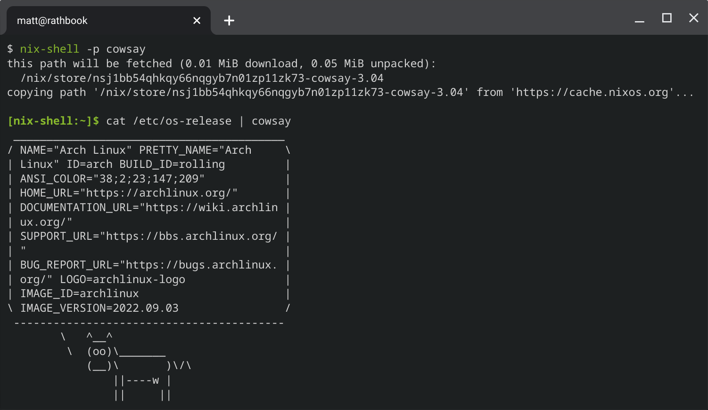

Installing Nix and Home Manager in Arch Linux
Hi, I’m Matt and I’m one of those masochists who uses a chromebook as their personal development machine (not work though, I’m not that crazy). A cool thing about Chrome OS’s Linux support is that you can swap the default, boring Debian container for any LXC image. Here’s an archwiki page on how to swap it to Arch!
A not-so-cool thing about that LXC setup is that there isn’t a NixOS LXC image available 😢. Instead, I set up an Arch Linux container with Nix and Home Manager. Best of both worlds I guess? Here’s how to do it.
What we’re setting up⌗
In these instructions, I’ll be setting up nix and home-manager. This setup doesn’t let you configure system-level things in nix like in NixOS, but you can configure things for your user using home-manager. If you set up nix-direnv in your home-manager config, you can add nix configurations for specific directories.
This should work for any Arch Linux install, not just my weird LXC image.
Let’s go!⌗
-
Install nix
sudo pacman -S nix -
Enable and start
nix-daemonsudo systemctl enable nix-daemon sudo systemctl start nix-daemon -
Add your user to the
nix-usersgroupsudo gpasswd -a <user> nix-users -
Log out and back in again for the group change to take effect
-
Add
nixpkgsandhome-managerchannelsnix-channel --add https://nixos.org/channels/nixpkgs-unstable nix-channel --add https://github.com/nix-community/home-manager/archive/master.tar.gz home-manager nix-channel --update -
Install home-manager
export NIX_PATH=$HOME/.nix-defexpr/channels:/nix/var/nix/profiles/per-user/root/channels${NIX_PATH:+:$NIX_PATH} nix-shell '<home-manager>' -A install -
Take a look at
~/.config/nixpkgs/home.nix, make any desired changes, then runhome-manager switch
And that should be it! Enjoy!

For more info…⌗
These instructions are basically a condensed version of these two pages: